WEDDING STUDIO / RESEARCH NOTES / 2026.10.29
이야기는 간결하게,
다른 장면은 더 우리답게.
청첩장 9개 업체의 공개 샘플을 비교했습니다. 이름과 날짜를 읽는 순간부터 사진을 고르고 길을 찾는 순간까지, 실제로 쓸 만한 차이를 조립실의 선택지로 옮기는 보고서입니다.
47개는 모두 애니메이션을 재생해 본 개수가 아닙니다. 브라우저 화면 확인 25개와 나머지 공개 HTML·본문·설정 분석 22개를 구분했습니다. 공식 기능 설명·상품 이미지는 이 샘플 수에 더하지 않았습니다.
조립실에 더한 선택
타 업체의 장점을 그대로 쌓기보다, 기존 사진과 예식 정보를 활용하는 표현·편의 선택을 우선했습니다. 아래 선택은 조립실에 반영했으며 최종 검사·공개 확인은 통합 검수 기록에 구분했습니다.
| 선택 항목 | 비교할 표현과 위치 | 공식 참고 근거 | 우리 조합에 맞춘 범위 |
|---|---|---|---|
| 글자 크기 | 원래 크기 · 편안하게 · 크게전체 분위기 → 색과 글 | Theirmood 기능 명세 · Fill 편집기 | 서체와 분리한 읽기 조절. 손글씨 벡터의 크기는 유지합니다. |
| 문장 사이 여유 | 원래 간격 · 여유롭게전체 분위기 → 색과 글 | 메종드마리에 공식 소개 | 우리 본문과 줄바꿈에 맞춘 작은 범위로 조절합니다. |
| 사진의 색감 | 원본 · 부드러운 색 · 흑백전체 분위기 → 사진 | 메종드마리에 사진 편집 소개 | 원본 파일을 바꾸지 않는 표시 효과. 구체적인 세 프리셋은 우리 디자인 제안입니다. |
| 표지 사진 구도 | 원래 구도 · 위쪽 · 아래쪽장면·순서 → 첫 화면의 세부 설정 | 바른손 표지 정보 배치 · TOG 위치 설정 안내 | 위·아래 사진 초점은 가독성을 위한 자체 확장입니다. 타 업체의 동일 컨트롤을 복제한 것은 아닙니다. |
| 사진첩 배열·열 수·비율 | 원본 비율 배열 추가 / 2·3열 / 세로·정사각·원본장면·순서 → 사진첩의 세부 설정 | Theirmood 사진 격자 명세 · Fill 사진첩 FAQ | 사진첩은 하나로 유지합니다. 열 수와 비율은 격자·원본 비율 배열에서 적용됩니다. |
| 마지막 장면 | 기존 인사 · 사진 위의 편지 · 사진을 간직한 인사장면·순서 → 마지막 장면 | Theirmood 엔딩 명세 · TOG 엔딩 안내 | 승인된 기존 사진과 인사를 활용합니다. 운영 기본 화면을 바꾸는 선택은 아닙니다. |
| 달력 날짜 표시 | 기존 표시 · 가는 원 · 작은 밑줄장면·순서 → 예식 날짜의 세부 설정 | Fill 달력 마커 안내 | 예식 날짜·달력·일정 데이터는 유지하고 강조 모양만 바꿉니다. |
| 당일 안내 패스 | 한 장의 패스 · 간결한 안내장면 더하기 → 당일 안내 패스 | Theirmood 하객나우 · 살롱드레터 당일 안내 | 일시·홀·주소·지도 진입을 한곳에 모읍니다. 날짜에 따라 자동으로 화면을 바꾸거나 알림을 보내지는 않습니다. |
| 안내 한 장씩 보기 | 기존 펼침·카드 + 안내 슬라이더장면 더하기 → 하객 안내 | TOG 공지 슬라이더 안내 | 직접 다음/이전을 골라 읽습니다. 미정인 식사·주차·셔틀 정보는 만들지 않습니다. |
| QR로 이어 보기 | 기존 티켓·엽서 + QR장면 더하기 → 간직하는 초대 | MOID QR · 살롱드레터 QR 안내 | 현재 조합의 공개 미리보기 주소를 로컬에서 QR로 만듭니다. 외부 QR 서비스에 정보 전송이나 인쇄 후 목적지 변경 기능은 없습니다. |
이미 있는 기능은 유지
첫 손글씨, 전체 음악, 색·서체, 공통 스크롤의 속도·강도, 장면 순서, 사진 확대, 길찾기, 받는 분 선택·계좌 복사, 봉투 방명록, 현재 위치 메뉴는 기존 기반입니다. 조사 결과에 있다고 새 기능으로 다시 세지 않았습니다.
원하는 만큼만 더하기
당일 패스는 선택 장면입니다. 하객 안내와 간직하는 초대에는 표현을 추가합니다. 기존 조합은 기본값을 유지하고, 새 선택도 조합 링크·이름·별점·메모와 함께 보관하는 흐름을 따릅니다.
업체별로 무엇을 봤나요?
업체를 펼치면 개별 공식 샘플 링크와 관측 내용을 볼 수 있습니다. 캡처는 해당 표지를 기록한 파일이며, 그 한 장으로 페이지 전체의 기능을 증명하지 않습니다.
브라우저에서 표지와 본문을 읽고 캡처한 사례입니다. 특정 클릭 동작은 따로 적었습니다.
실제 샘플의 공개 HTML·본문·설정을 읽었습니다. 숨긴 팝업이나 설정이 화면에 보인다고 단정하지 않습니다.
업체가 안내하는 제공 기능입니다. 생성·저장·발송·실기기 작동을 실행했다는 의미는 아닙니다.
9개 업체 · 47개 샘플
01TO OUR GUEST샘플 5개 · 화면 5개＋
같은 핵심 구성에 사진 프레임과 레터링의 배치를 바꾸는 방식입니다. 안내·계좌처럼 하객이 자주 찾는 기능은 짧게 모읍니다.
확인한 내용
5개 실제 화면에서 날짜·가족·타임라인·사진첩·교통·계좌·메시지·안내·RSVP·피로연·Our Spots 구성을 확인했습니다. Copenhagen의 계좌를 펼치면 받는 분 3명이 나오는 것까지 확인했습니다.
우리에게 가져올 점
공지 슬라이더·QR·엔딩 표현을 참고하고, 가족·계좌·순서 변경은 기존 기능을 유지합니다.
확인 범위 아치·전체 사진·사진 띠 등 표지 차이는 화면 근거입니다. 모든 시안의 손글씨 획·스크롤 모션을 각각 재생 검증했다는 뜻은 아닙니다. 계좌 복사·송금은 실행하지 않았습니다.
| 공식 공개 샘플 | 관측과 확인 방법 | 파일 근거 |
|---|---|---|
| Seychelles | 표지·본문 화면 확인 아래 업체별 실제 화면 확인 기록을 참고해 주세요. | 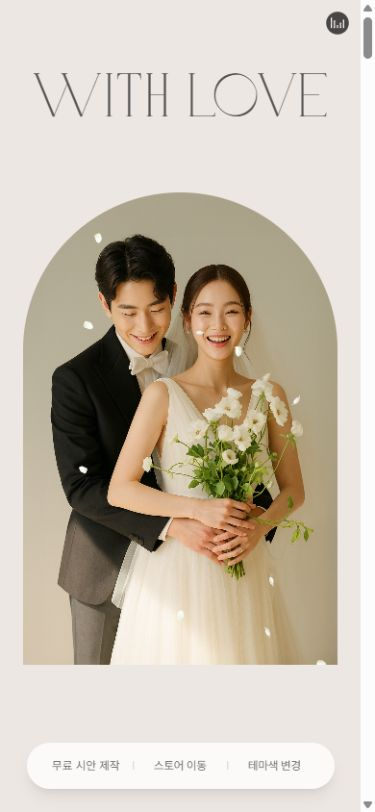 표지 캡처 열기 |
| Porto | 표지·본문 화면 확인 아래 업체별 실제 화면 확인 기록을 참고해 주세요. | 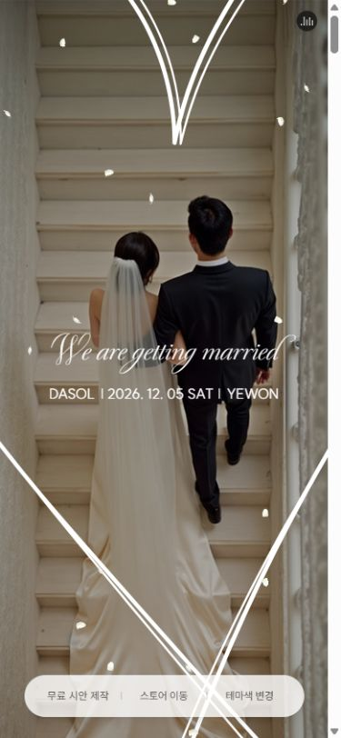 표지 캡처 열기 |
| Sydney | 표지·본문 화면 확인 아래 업체별 실제 화면 확인 기록을 참고해 주세요. | 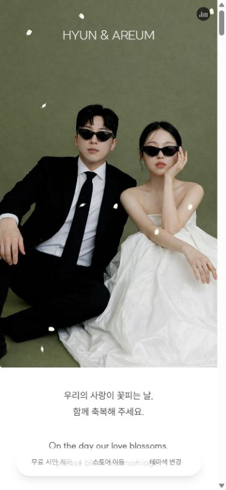 표지 캡처 열기 |
| Seoul | 표지·본문 화면 확인 아래 업체별 실제 화면 확인 기록을 참고해 주세요. | 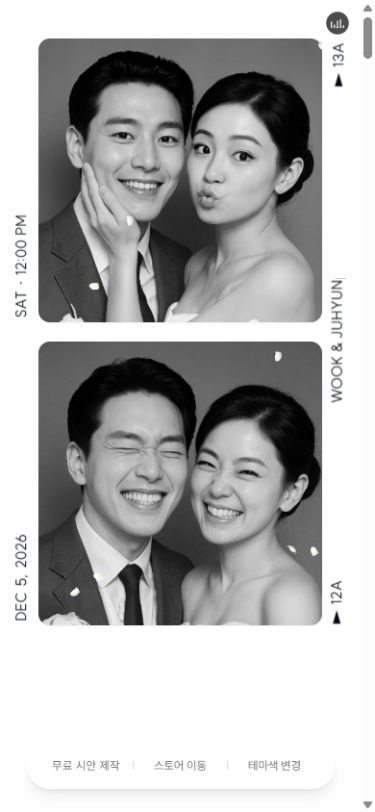 표지 캡처 열기 |
| Copenhagen | 표지·본문 화면 확인 아래 업체별 실제 화면 확인 기록을 참고해 주세요. | 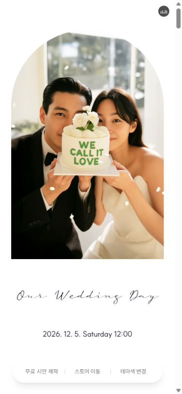 표지 캡처 열기 |


02Theirmood샘플 5개 · 화면 5개＋
표지와 사진 사이의 여백, 이야기·정보 블록의 구분이 선명합니다. 장식뿐 아니라 당일 안내와 사진 배열 설정도 참고할 가치가 있습니다.
확인한 내용
5개 실제 본문과 표지를 확인했습니다. 브라이트는 이야기·인터뷰·방명록 전체보기·RSVP 자동 팝업, 블루·핸드라이팅은 사진 업로드 기간 안내와 양가 계좌, 톤온톤은 사진 없는 큰 타이포 표지와 피로연 지도 구성이 보였습니다.
우리에게 가져올 점
2·3열과 사진 비율, 마지막 사진 편지, 한 장에 모은 당일 안내를 우리 구성에 맞게 제안합니다.
확인 범위 Handwriting이라는 이름만으로 획 애니메이션을 검증했다고 보지 않습니다. 하객 업로드·알림 발송·송금·RSVP 제출은 실행하지 않았습니다.
| 공식 공개 샘플 | 관측과 확인 방법 | 파일 근거 |
|---|---|---|
| 01 브라이트 데이 | 표지·본문 화면 확인 아래 업체별 실제 화면 확인 기록을 참고해 주세요. | 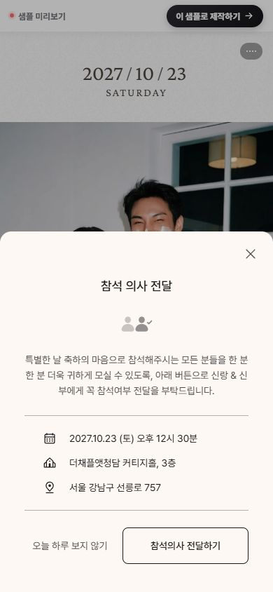 표지 캡처 열기 |
| 02 로즈 스크립트 | 표지·본문 화면 확인 아래 업체별 실제 화면 확인 기록을 참고해 주세요. | 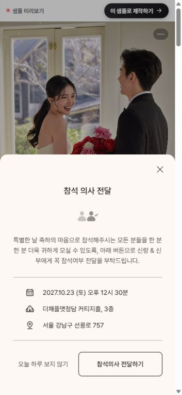 표지 캡처 열기 |
| 03 톤온톤 타이포 | 표지·본문 화면 확인 아래 업체별 실제 화면 확인 기록을 참고해 주세요. | 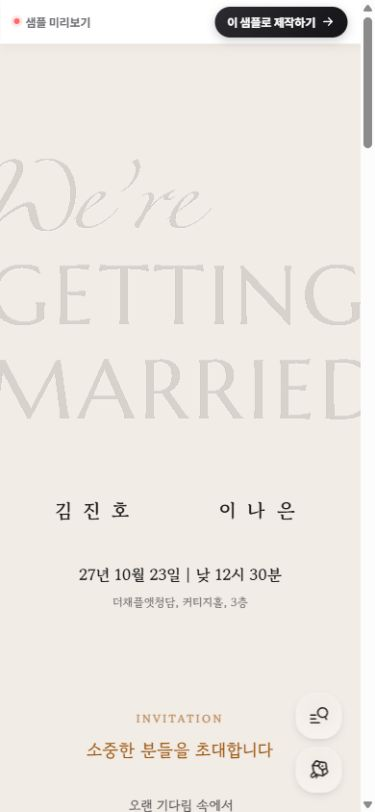 표지 캡처 열기 |
| 18 블루 캐주얼 | 표지·본문 화면 확인 아래 업체별 실제 화면 확인 기록을 참고해 주세요. | 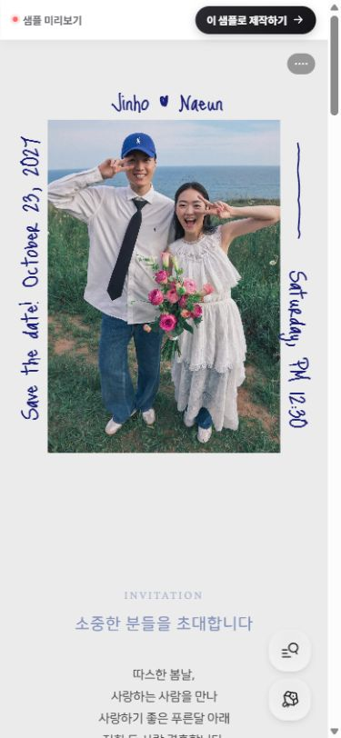 표지 캡처 열기 |
| 35 핸드라이팅 | 표지·본문 화면 확인 아래 업체별 실제 화면 확인 기록을 참고해 주세요. | 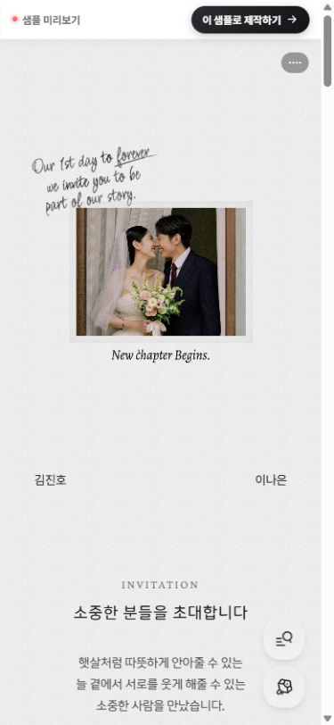 표지 캡처 열기 |


03MOID샘플 5개 · 화면 5개＋
표지의 아치·타이포·흑백 사진은 달라도 필요한 하객 기능은 공통으로 유지하는 구조입니다.
확인한 내용
Classic Ivory, Sage Garden, Editorial Mono, Modern Minimal, Golden Letter의 실제 표지·본문·버튼을 확인했습니다. Classic의 주차 안내 탭을 누르면 주차 문구와 주차장 지도 링크로 전환됩니다.
우리에게 가져올 점
안내의 분류와 QR 전달을 참고합니다. 블록 순서·표시 선택은 우리 조립실에 이미 있습니다.
확인 범위 주차 탭의 내용 전환은 직접 확인했습니다. 지도 앱 실행·QR 발급·작성·복사·송금은 확인 범위가 아닙니다.
| 공식 공개 샘플 | 관측과 확인 방법 | 파일 근거 |
|---|---|---|
| Classic Ivory | 표지·본문 화면 확인 아래 업체별 실제 화면 확인 기록을 참고해 주세요. | 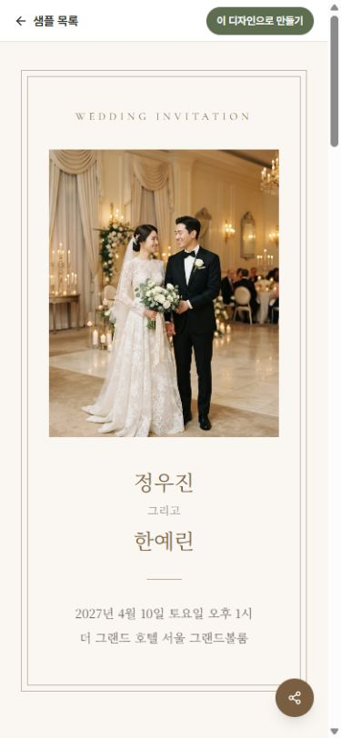 표지 캡처 열기 |
| Sage Garden | 표지·본문 화면 확인 아래 업체별 실제 화면 확인 기록을 참고해 주세요. | 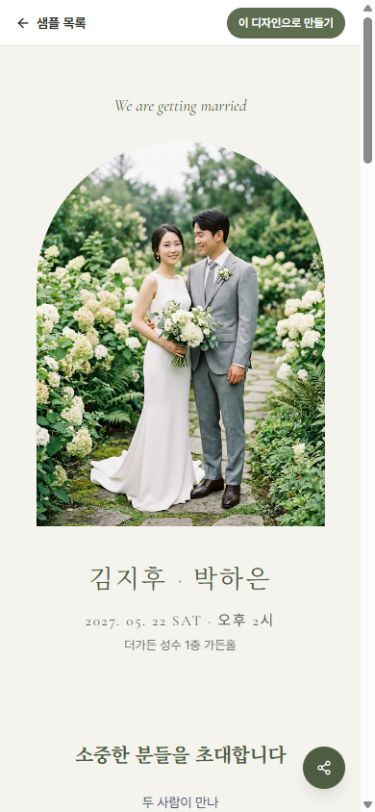 표지 캡처 열기 |
| Editorial Mono | 표지·본문 화면 확인 아래 업체별 실제 화면 확인 기록을 참고해 주세요. | 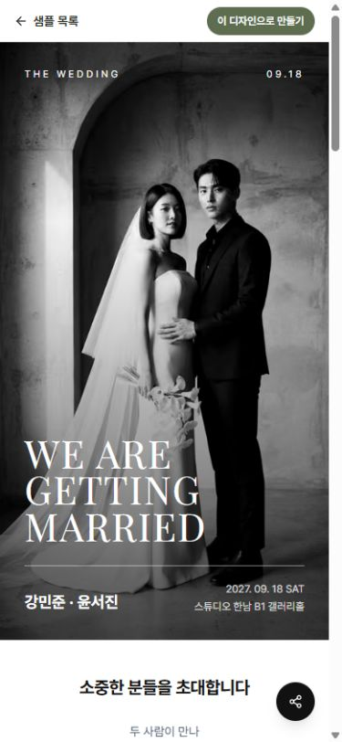 표지 캡처 열기 |
| Modern Minimal | 표지·본문 화면 확인 아래 업체별 실제 화면 확인 기록을 참고해 주세요. | 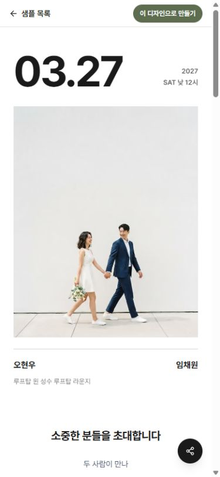 표지 캡처 열기 |
| Golden Letter | 표지·본문 화면 확인 아래 업체별 실제 화면 확인 기록을 참고해 주세요. | 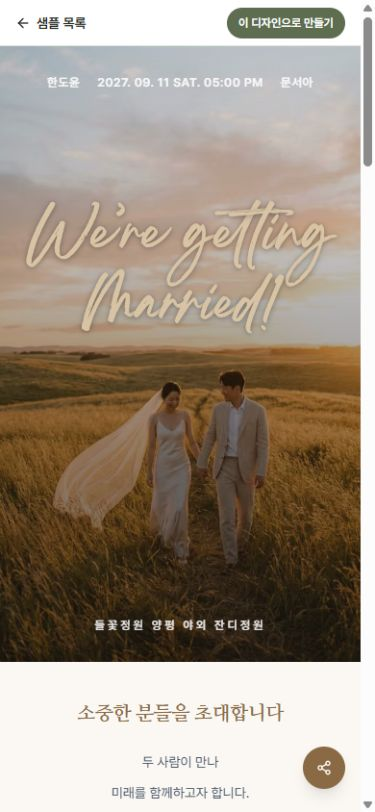 표지 캡처 열기 |


04바른손M카드샘플 5개＋
사진과 이름·예식 정보를 어디에서 분리하는지가 주요 차이입니다. 첫 화면 가독성을 비교하기 좋은 표본입니다.
확인한 내용
공식 상품과 공개 템플릿 설정을 대조했습니다. 사진 전체 위에 정보를 놓는 구성과 사진 아래에 이름·일시를 분리하는 구성이 있습니다.
우리에게 가져올 점
표지 사진의 초점을 선택해 이름과 인물이 덜 겹치도록 조정합니다.
확인 범위 이번 묶음은 공개 HTML·템플릿 설정 분석입니다. GIF 자원 참조가 있어도 움직임을 직접 본 것으로 표기하지 않았습니다.
| 공식 공개 샘플 | 관측과 확인 방법 | 파일 근거 |
|---|---|---|
| 영화 같은 순간 MC4114공식 상품 연결 | 공개 원문·구조 확인 전체 높이 사진 위 흰색 이름·일시·장소 · 이름은 표지 상부, 날짜/장소는 하부 · GIF 레이어 참조(재생 내용 미확인) | 별도 화면 캡처 없음 |
| 마가렛 MC4115공식 상품 연결 | 공개 원문·구조 확인 표지 상부 사진과 하부 이름·일시 영역 분리 · 나눔명조 이름과 중립색 날짜 | 별도 화면 캡처 없음 |
| 행복한 시작 MC4108공식 상품 연결 | 공개 원문·구조 확인 전체 높이 사진 위 이름·날짜·장소를 하부에 배치 · 나눔명조 초대글과 옅은 회색 배경 | 별도 화면 캡처 없음 |
| Elegant Pearl MC3220공식 상품 연결 | 공개 원문·구조 확인 사진 아래 정보 영역 · 갈색 이름·일시와 따뜻한 초대글 배경 | 별도 화면 캡처 없음 |
| On The Grass MC4106공식 상품 연결 | 공개 원문·구조 확인 전체 높이 사진과 흰색 하부 정보 · GIF 레이어 참조(재생 내용 미확인) | 별도 화면 캡처 없음 |
05보자기카드샘플 5개 · 화면 5개＋
서체·배경·섹션 순서와 연락처·계좌의 펼침 방식이 별도 설정으로 나뉩니다.
확인한 내용
5개 공개 샘플의 표지와 최소 본문 구조를 브라우저로 추가 확인했습니다. 이미지 중심 날짜와 본문형 배치를 비교했습니다. 원문에서는 프로필·인터뷰·히스토리 블록 설정, A new track의 Georgia·고운돋움과 grid-basic 설정을 확인했습니다.
우리에게 가져올 점
설정을 전체 분위기·장면·세부 설정으로 나누되, 실제 자료가 없는 블록은 자동 추가하지 않습니다.
확인 범위 설정의 활성화 여부와 실제 데이터 존재는 다릅니다. 원문 사진 배열은 비어 있고 대부분의 design 값은 null이었습니다. 방명록 버튼의 결과를 검증하지 못해 동작 확인으로 집계하지 않았습니다.
| 공식 공개 샘플 | 관측과 확인 방법 | 파일 근거 |
|---|---|---|
| 사랑을 그린 날공식 상품 연결 | 표지·본문 화면 확인 공식 카탈로그의 별도 표지 스킨 · 초대글·사진·위치·연락·방명록·프로필/인터뷰/히스토리 활성화 설정 · 계좌·RSVP·음악·공지·달력은 이 샘플 설정에서 비활성 | 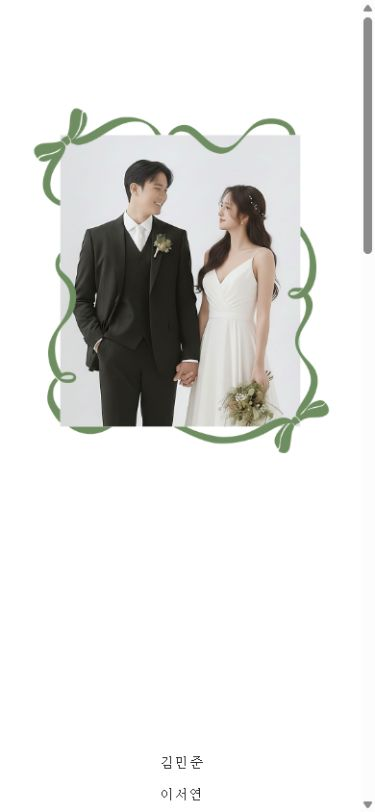 표지 캡처 열기 |
| A new track공식 상품 연결 | 표지·본문 화면 확인 제목 Georgia·본문 고운돋움 설정 · 배경 교대·섹션 순서·연락/계좌 접기 옵션 · 방명록 답장 작성자 설정 · 갤러리 grid-basic·모서리 square 설정 · 진입/배경 효과는 none | 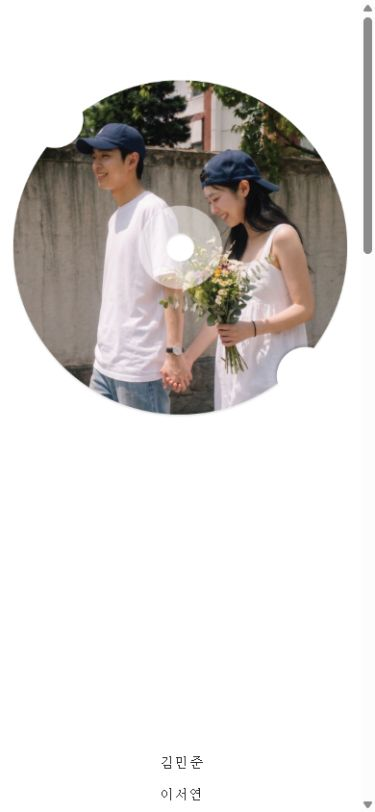 표지 캡처 열기 |
| Forever Begins공식 상품 연결 | 표지·본문 화면 확인 공식 카탈로그의 별도 표지 스킨 · 초대글·사진·위치·연락·방명록·프로필/인터뷰/히스토리 활성화 설정 · 계좌·RSVP·음악·공지·달력은 이 샘플 설정에서 비활성 | 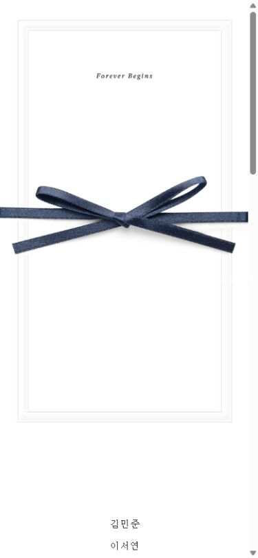 표지 캡처 열기 |
| Minimal Pearl공식 상품 연결 | 표지·본문 화면 확인 공식 카탈로그의 별도 표지 스킨 · 초대글·사진·위치·연락·방명록·프로필/인터뷰/히스토리 활성화 설정 · 계좌·RSVP·음악·공지·달력은 이 샘플 설정에서 비활성 | 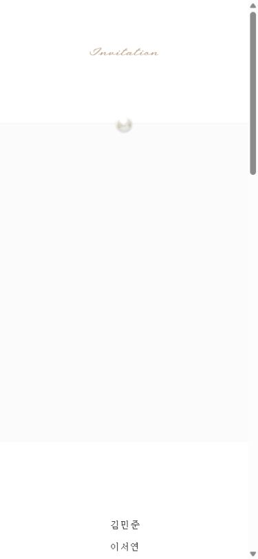 표지 캡처 열기 |
| 버건디 러브공식 상품 연결 | 표지·본문 화면 확인 공식 카탈로그의 별도 표지 스킨 · 초대글·사진·위치·연락·방명록·프로필/인터뷰/히스토리 활성화 설정 · 계좌·RSVP·음악·공지·달력은 이 샘플 설정에서 비활성 | 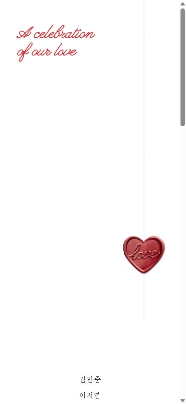 표지 캡처 열기 |


06봄카드(제휴 필카드)샘플 6개＋
같은 기능을 사진첩 방식과 색·서체·액션 모양으로 달리 표현합니다.
확인한 내용
6개 샘플의 공개 HTML·CSS를 읽었습니다. 격자와 가로 슬라이드 사진첩, 혼주 연락, 계좌 복사/PAY, 방명록 전체보기 구조를 비교했습니다.
우리에게 가져올 점
기존 손글씨를 유지하고 사진첩의 열 수와 프레임 비율을 더 세밀하게 고릅니다.
확인 범위 Promise에는 글자를 시간 간격으로 추가하는 코드가 있지만 이번 조사에서 실제 타이핑 재생을 검증하지 않았습니다. Love motion도 이름만으로 모션을 판단하지 않았습니다.
| 공식 공개 샘플 | 관측과 확인 방법 | 파일 근거 |
|---|---|---|
| Fall in love공식 상품 연결 | 공개 원문·구조 확인 바둑판 앨범 안내 · 혼주 연락 창·계좌 복사/PAY·방명록 전체보기 · 로즈 강조색 | 별도 화면 캡처 없음 |
| Wedding day공식 상품 연결 | 공개 원문·구조 확인 가로 슬라이드 앨범 안내 · 사진 아래 그라디언트 레이어 · 네이비 강조·직선형 액션 CSS | 별도 화면 캡처 없음 |
| Promise공식 상품 연결 | 공개 원문·구조 확인 바둑판 앨범 안내 · 가족 연락을 초대글 앞에 배치 · 100ms 간격으로 글자를 추가하는 typing 코드와 커서 CSS · Damion 영문·따뜻한 크림 배경 | 별도 화면 캡처 없음 |
| Everything공식 상품 연결 | 공개 원문·구조 확인 가로 슬라이드 앨범 안내 · 상하 그라디언트 레이어 · 골드 강조·둥근 계좌/연락 액션 CSS | 별도 화면 캡처 없음 |
| Love motion공식 상품 연결 | 공개 원문·구조 확인 바둑판 앨범 안내 · arch 클래스와 중립색 액션 CSS · 명칭만으로 모션을 판단하지 않음 | 별도 화면 캡처 없음 |
| Lovely day공식 상품 연결 | 공개 원문·구조 확인 가로 슬라이드 앨범 안내 · 살구색 외곽과 흰 내부 프레임 CSS · Pacifico 제목·오렌지 강조색 | 별도 화면 캡처 없음 |
07아름샘플 5개 · 화면 5개＋
표지의 정보 배치·서체 선택과 교통·공지 구분이 명료합니다.
확인한 내용
5개 실제 표지에서 큰 날짜+사각 사진, 사진 아래 타이포, 아치 사진, 전면 사진 위 흰 정보, 사진과 실링의 겹침을 비교했습니다. 공통 달력·사진 12장·교통·안내·계좌·방명록과 업로드 마감 문구도 확인했습니다. 포스터 표지에는 꽃잎이 보였습니다.
우리에게 가져올 점
본문 크기·행간을 따로 선택하고, 확정된 정보만 하객 안내에 표시합니다.
확인 범위 서체 이름·크기는 공식 목록 설명이며 실제 font loaded 검사 결과가 아닙니다. 아름의 기능 버튼은 클릭 검증하지 않았습니다. 꽃잎의 존재는 시각 관측이며 애니메이션 경로·반복을 분석한 것은 아닙니다.
| 공식 공개 샘플 | 관측과 확인 방법 | 파일 근거 |
|---|---|---|
| 베이직 1공식 상품 연결 | 표지·본문 화면 확인 월·일 중심 표지 · 공식 목록: 프리텐다드 S · 여섯 교통 분류·공지·양가 계좌 · 하객 사진 업로드 기간 종료 문구 | 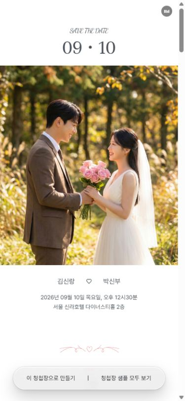 표지 캡처 열기 |
| 클래식 1공식 상품 연결 | 표지·본문 화면 확인 영문 월·일·연도 분리 표지 · 공식 목록: 리디바탕 L · 사진·영상 올리기 버튼과 공지사항 | 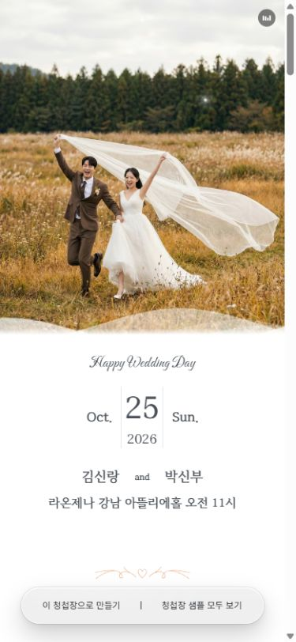 표지 캡처 열기 |
| 아치 1공식 상품 연결 | 표지·본문 화면 확인 큰 월·일과 이름·시간·홀 표지 · 공식 목록: 경복궁 수문장 L · 교통/주차/식사/버스 안내 구분 | 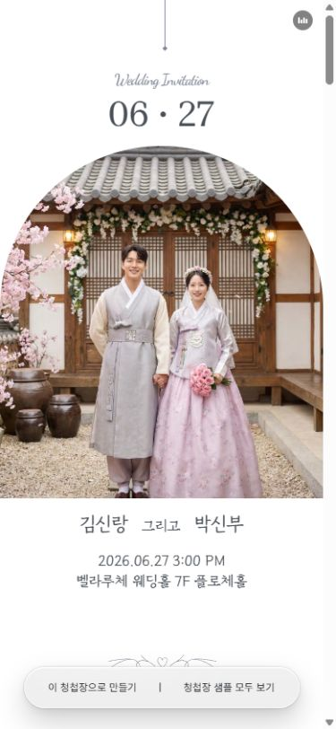 표지 캡처 열기 |
| 포스터 1공식 상품 연결 | 표지·본문 화면 확인 시간(12:30)과 날짜·이름 표지 · 공식 목록: 에스코어드림 S · 연락·달력·갤러리·위치·계좌·방명록 구성 | 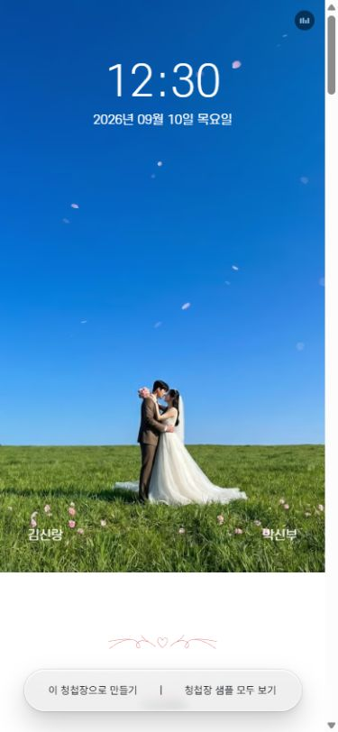 표지 캡처 열기 |
| 실링왁스 1공식 상품 연결 | 표지·본문 화면 확인 wax-seal 이미지와 이름·일시·홀 표지 · 공식 목록: 프리텐다드 M · 가족 연락과 달력으로 이어지는 구성 | 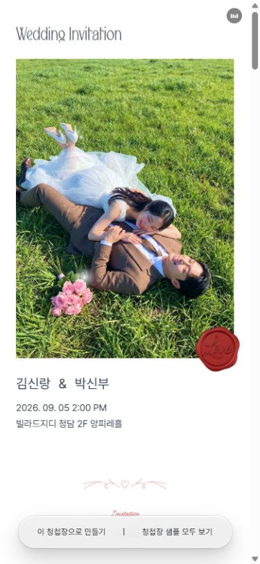 표지 캡처 열기 |


08살롱드레터샘플 6개＋
오프닝·구역 메뉴와 함께 하객 안내를 여러 형태로 나누는 방식이 눈에 띕니다.
확인한 내용
공식 샘플 링크 6개에서 공개 HTML을 확인했습니다. 표지 type, 로딩 구조, 상단 메뉴, 피로연·공지 및 계좌·방명록 구조를 비교했습니다.
우리에게 가져올 점
당일 정보 패스와 QR 전달을 참고합니다. 하객 사진 수집·받는 사람별 비공개 편지는 별도 설계 대상입니다.
확인 범위 001 등의 번호는 공식 블로그 이미지 파일 기준이며 작품명이 아닙니다. 숨긴 레이아웃도 HTML에 존재하므로 DOM 존재를 화면 노출이나 애니메이션 재생으로 단정하지 않습니다.
| 공식 공개 샘플 | 관측과 확인 방법 | 파일 근거 |
|---|---|---|
| 공식 샘플 001공식 상품 연결 | 공개 원문·구조 확인 type_j 표지·음악 준비 문구·로딩 SVG 구조 · 인터뷰·사진·게스트스냅·교통·계좌·방명록 · 원고/사진첩 여러 레이아웃 DOM이 함께 존재 | 별도 화면 캡처 없음 |
| 공식 샘플 003공식 상품 연결 | 공개 원문·구조 확인 type_i 표지·로딩 구조 · 이름 영문 병기·부모 편지·게스트스냅 · 10개 사진 번호와 복사/PAY UI | 별도 화면 캡처 없음 |
| 공식 샘플 004공식 상품 연결 | 공개 원문·구조 확인 type_h 표지·로딩·상단 구역 메뉴 구조 · 갤러리·인터뷰·교통·게스트스냅·방명록 | 별도 화면 캡처 없음 |
| 공식 샘플 002공식 상품 연결 | 공개 원문·구조 확인 type_j 표지·로딩 DOM 없음 · 게스트스냅·갤러리·교통·계좌·방명록 · gallery_portrait DOM 참조 | 별도 화면 캡처 없음 |
| 공식 샘플 011공식 상품 연결 | 공개 원문·구조 확인 type_j 표지·로딩·상단 구역 메뉴 · 피로연 안내·박스형/카드형 안내문 구분 · 계좌·방명록·화환 UI | 별도 화면 캡처 없음 |
| 공식 샘플 014공식 상품 연결 | 공개 원문·구조 확인 type_j 표지·상단 구역 메뉴, 로딩 DOM 없음 · 사진 8개 번호와 더보기 · 피로연·공지·계좌·방명록 | 별도 화면 캡처 없음 |
09잇츠카드샘플 5개＋
기본 기능은 공유하면서 표지·구역 제목과 사진첩 표현이 달라지는 사례입니다.
확인한 내용
공식 상품의 iframe을 따라 공개 샘플 5개를 확인했습니다. 표지→초대글/가족→연락→달력→사진첩→위치/교통→계좌→방명록의 공통 흐름이 있습니다.
우리에게 가져올 점
핵심 기능을 더 늘리기보다 크기·비율·배치의 읽기 편의를 선택할 수 있게 합니다.
확인 범위 실제 샘플의 연락·문자 버튼은 pcAlert() 안내로 연결됩니다. 버튼이 있다고 실제 전화·문자를 검증한 것으로 세지 않습니다. 일부 예시 날짜도 서로 달랐습니다.
| 공식 공개 샘플 | 관측과 확인 방법 | 파일 근거 |
|---|---|---|
| 모던포토3공식 상품 연결 | 공개 원문·구조 확인 표지에 결혼 안내·이름·일시·홀 표기 · 이미지형 구역 제목과 gallery roll_type01 구조 | 별도 화면 캡처 없음 |
| 핑크빛 웨딩공식 상품 연결 | 공개 원문·구조 확인 visual-section h-100 표지 · 이름 사이 접속어와 숫자형 영문 요일·시간 · gallery roll_type01 구조 | 별도 화면 캡처 없음 |
| 스몰웨딩공식 상품 연결 | 공개 원문·구조 확인 한국어 구역 제목에 글자 사이 공간을 둔 표기 · gallery roll_type01 구조 | 별도 화면 캡처 없음 |
| 결혼합니다공식 상품 연결 | 공개 원문·구조 확인 표지 일시를 한국어 문장형으로 표기 · gallery roll_type01 구조 | 별도 화면 캡처 없음 |
| 싱그러운날2공식 상품 연결 | 공개 원문·구조 확인 표지 D-day 문구 · gallery-section type2 배열과 별도 확대 갤러리 · 다른 샘플의 영상 뒤 추가 배너 섹션 없음 | 별도 화면 캡처 없음 |
직접 조작한 예: TO OUR GUEST Copenhagen의 계좌 펼침, MOID Classic의 주차 안내 전환. 제출·계좌 복사·송금·하객 업로드·QR 발급·외부 메시지 전송을 자동 실행하지 않았습니다. Theirmood의 자동 RSVP 팝업은 닫기까지 확인했으며 내용 제출은 하지 않았습니다.
샘플 수와 분리한 공식 자료
‘기능 항목’, ‘자료 페이지’, ‘상품 상세’는 다른 단위이므로 하나의 총개수로 합치지 않았습니다. 접근이 제한된 업체를 실제 샘플로 채워 넣지 않았습니다.
공식 기능 항목 18개
TO OUR GUEST 6 + Theirmood 7 + MOID 5. 같은 공식 페이지 안의 서로 다른 항목도 포함합니다.
TO OUR GUEST · 기능 항목 6개
- QR 다운로드2025-03-26 하트 QR / 2025-05-27 투명 QR · 일반·하트 QR 및 다운로드 안내.
- 안내 슬라이더2025-03-26 공지 영역 · 공지 슬라이더 선택 안내.
- 표지 글자 위치2025-05-21 커버 폰트 / 2025-03-24 레터링 위치 · 표지·인트로 글자 위치 선택 안내.
- 마지막 사진2025-04-07 엔딩글귀 · 엔딩 사진 그라데이션 선택 안내.
- 중간 블록2026-05-26 신규 커버 등 · 사진·문구 블록 배치 안내.
- 가족·계좌 배치2024-08-07 가족 / 2024-07-07 계좌 · 가족 배열과 계좌 탭·목록 선택 안내.
Theirmood · 기능 항목 7개
- 예식 당일 안내하객나우 / §7 하객 편의 · 당일 길·주차·ATM 안내를 모으는 화면.
- 사진 격자 세부 설정§3 사진·영상 · 격자 2·3단과 혼합·정사각·직사각 비율.
- 마지막 장면§3 엔딩 스타일 · 기본·스크롤 연출·블러 카드 선택.
- QR와 이미지 공유§9 공유 · 일반·하트 QR와 이미지 출력.
- 글자 크기§1 제작·편집 · 세 단계 글자 크기.
- 개인 초대 편지모청편지 / §9 공유 · 하객별 편지와 개별 링크.
- 하객 사진 수집§4 모청스냅 · 하객 업로드를 연결한 개인 Drive에 저장.
추가 공식 설명 페이지 4개
보자기 1 · 살롱드레터 2 · 필카드 1. 각 페이지의 설명을 확인했으며 제공 기능 전체를 실행하지 않았습니다.
- 보자기카드 공식 기능 안내혼주 연락 별도 열기 · 포토부스·주차 공지 · 방명록의 신랑신부 답장 예시 · 갤러리 현재/전체 숫자 · 카카오톡/링크 공유
- 살롱드레터 공식 기능 안내예식 당일 위치·연락·길찾기 우선 안내 · 받는 사람별 공유 문구 · 글자 레터링 색·위치 · 개인 구글드라이브 게스트스냅 · 교통 안내 최대10개와 색상
- 살롱드레터 공식 기능 안내QR 먼저 발급하고 청첩장 연결 · 인쇄 뒤에도 QR 유지 · 다운로드/링크확인 UI
- 필카드 공식 기능 안내계좌 복사 후 은행 앱 붙여넣기 · 카카오페이 QR 등록 · BGM 직접 업로드
FillTheSpace
홈·편집기·FAQ의 3개 자료. 신규 생성·불러오기·저장은 하지 않았습니다.
- 홈 내 청첩장 미리보기홈에서 세 프리셋이 소개되지만 개별 완료 샘플 5개로 집계하지 않음
- 공개 편집기초기 신규/불러오기 모달이 뒤늦게 설정 본문을 가린다. 신규 생성·저장하지 않았으며 설정 적용 후 결과 검증이 아님
- 공식 FAQ공식 기능 설명이다. 개별 설정의 실제 작동은 이번 조사에서 검증하지 않음
젠스디자인
공식 상품 상세 5개. 실행 가능한 개별 청첩장 샘플로 집계하지 않았습니다.
메종드마리에
공식 소개 1개. 사진·글자 편집 시연 UI와 설명이며, 완성 샘플 5개 확인이 아닙니다.
- 공식 기능 소개소개 페이지의 시연 UI와 설명만 관측. 5개 실제 완료 청첩장 경로 미확보; 기능 작동 확인으로 집계하지 않음
잇츠카드의 글자 크기·공유 문구 설정은 공식 상품 설명에서 보충했습니다. 디얼디어는 LetterB 제휴 편집기로 연결되고 로그인이 필요해 샘플 집계에서 제외했습니다. 웹 도구가 본문을 읽지 못한 TOG·Theirmood·MOID는 브라우저 확인을 별도로 보충했습니다.
좋아 보여도 지금은 보류한 기능
기존 두 사람의 사진첩·계좌 관리 권한을 넓히거나, 실제 운영 데이터를 새로 수집하는 기능은 별도 검토가 필요합니다.
하객이 찍은 사진 받기
두 사람이 관리하는 기존 사진첩과 목적이 다릅니다. 업로드 권한·파일 용량·삭제·보관 기간과 공개 범위를 정한 뒤 별도 서버 기능으로 설계해야 합니다.
개인 편지·방명록 답장
받는 사람별 비공개 링크와 신랑신부 전용 답장은 인증·읽기 권한·운영 API가 필요합니다. 조립용 화면만 추가해 실제 기능처럼 보이게 하지 않습니다.
당일 자동 전환·알림
이번 당일 패스는 직접 추가하는 정보 장면입니다. 특정 날짜의 자동 화면 전환·알림톡·문자 발송·QR 목적지 예약 연결은 별도 정책과 서비스가 필요한 후속 범위입니다.
이번 요청에서 제외한 구성
RSVP, 영상, 두 번째 사진첩은 앞선 선택을 유지합니다. 미정인 부모님 성함·식사·무료 주차 시간·전세버스·연락처·송금 링크를 임의로 채우지 않습니다.
근거 파일과 검증 상태
연구의 근거와 구현 검증 결과는 구분합니다. 최종 기능·반응형·배포 확인 결과를 통합 검수 기록에 보관했습니다.

전체 2,278개 검사 통과. 320·390·430·1100·1440px 화면과 선택·비교·저장 복원, 음악·작성 중 입력 보존을 확인했습니다. 공개 파일 260개 일치, 기존 205개 파일 보존, 다른 앱 50개 경로 404·API 19개·기존 Pages 4개 보존을 확인했습니다. 실제 휴대전화 QR 카메라·지도 앱은 별도 확인 대상입니다.
통합 검수 기록 → · 조립실 열기 ↗